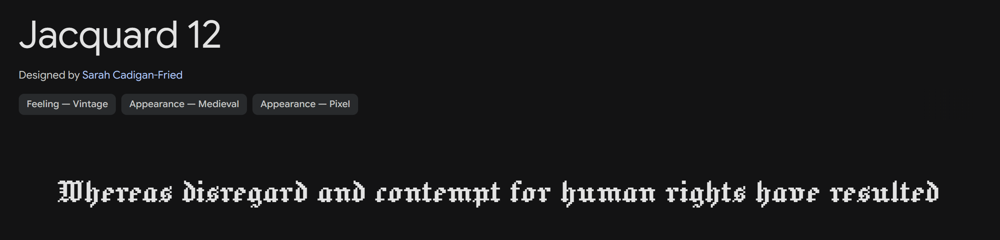
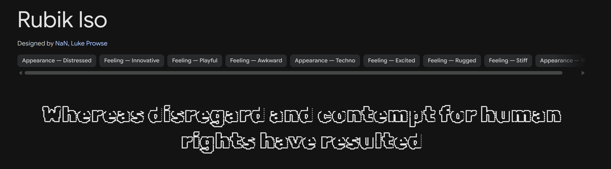
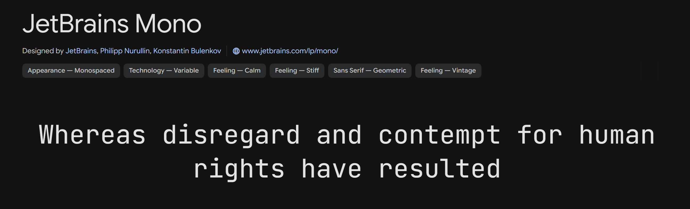
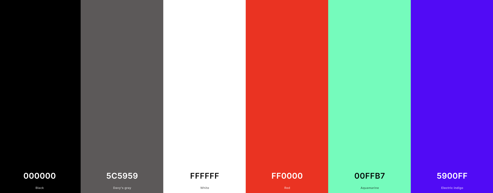
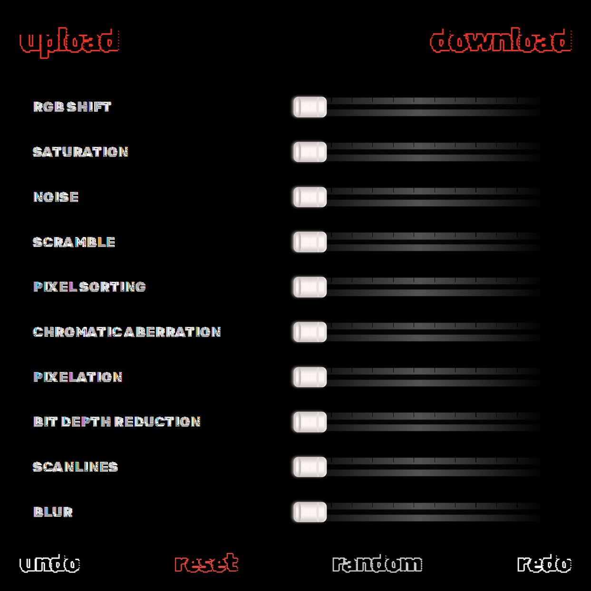
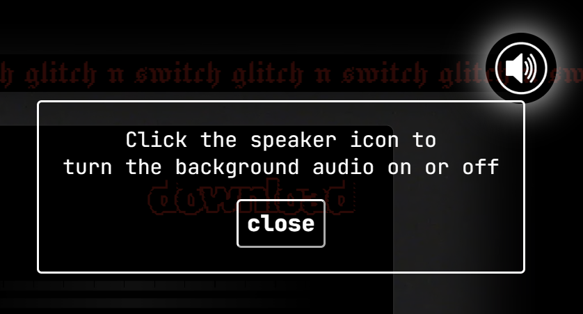

✦ Click the category titles to expand and view the content ✦
This page critically reflects on the key design decisions made during the development of the 'Glitch n Switch' project. It explores the project’s intent, value, aesthetics, technical limitations, and compositional strategies. Through these considerations and decisions, 'Glitch n Switch' became more than just an image editing tool—it became a space to discover new beauty in imperfection and enjoy the freedom of creative experimentation. I invite you to experience and enjoy the full potential of this platform :D
by Hayoung Ahn
Desired Outcome
The primary ambition behind 'Glitch n Switch' was to create a web-based tool that goes beyond traditional image editing. It aimed to provide an immersive experience in glitch art—celebrating distortion, errors, and imperfection as sources of beauty and creativity.
Core Intent
While digital artists and design students were the target users, the ultimate goal was to make glitch art accessible and enjoyable for anyone. To support this, I focused on creating an interactive interface that responds in real time, allowing users to produce unexpected visual results and discover new aesthetic possibilities. Rather than being a mere tool, 'Glitch n Switch' aspires to be a creative space for exploring imperfection in the digital age.
Evolution
Initially, the focus was purely on implementing glitch effects. However, as the project progressed, it gained philosophical depth, embracing the concept of “imperfection as beauty” and expanding the objective to offer a new kind of creative experience.
Value Beyond Novelty
'Glitch n Switch' pursued values that extend beyond simply producing unique outcomes:
Creative Freedom and Embracing Imperfection:
Growing up in a culture that prioritizes perfection, I wanted to encourage users to let go of perfectionism and discover beauty in randomness and unpredictability. This project advocates for creative expression without constraints.
Reframing 'Error':
Rather than viewing errors as failures, I positioned them as potential design opportunities. This challenges digital perfectionism and highlights the unique charm of technological flaws.
Visual-Audio Synergy:
Glitch art in this project is not only visual but also auditory. As users adjust the sliders, both images and background sounds shift simultaneously—deepening immersion and reinforcing the glitch aesthetic.
Evolution
The project began with a focus on visual glitch effects but gradually shifted toward championing freedom from perfection and emphasizing artistic experimentation.
Intentional Constraints
Desktop-First Design:
Due to development limitations and time constraints, the experience was optimized for desktop use to ensure a more immersive and technically stable environment.
User Warnings:
A visual-auditory warning appears on the loading page to prepare users for potentially intense sensory experiences.
Narrative Entry Point:
Rather than a standard loading animation, the project begins with a VHS-style intro featuring typewriter sounds and screen flickers—inviting users into a digital art world with a storytelling approach.
Fullscreen & Layered UI:
To maximize user immersion, the interface utilizes a fullscreen layout with layered transitions and overlapping content for dynamic interaction.
Evolution
For loading page, I considered a simple percentage-based loading animation. This changed once I realized the importance of conveying the glitch aesthetic and narrative tone from the very beginning, leading to the addition of a stylized VHS intro.
Stylistic Choices and Aesthetic Intentions:
VHS Inspired Visuals:
VHS video, background, color bleed effects, and noise textures were used to evoke the analog beauty of visual distortion. The loading sequence simulates a tape insertion, drawing users into the glitch universe. and I intentionally darkened the edges of the main page to guide the user's attention toward the center workspace. This helps create a focused visual area, encouraging users to concentrate on where the actual interaction happens.
Typography:
'Rubik Iso' and 'Jacquard 12' was used for titles to convey a broken, analog pixel vibe, while 'JetBrains Mono' offered clean readability for UI elements. A typing animation added a sense of unease and glitchiness.



Color Palette:
Dominated by black, red, and white, the color scheme creates strong contrast and cyberpunk energy, inspired by retro television glitches. Text selection adds mint and purple hues for a more digital and futuristic vibe.

UI Design:
The sliders looks like audio an audio mixer, it was for glitch effects were designed with minimal decoration to keep the user's attention focused on the editing process. In also, I added a glowing effect to all the buttons when hovered over to make them easier to identify.


Audio Design:
The retro, beat-driven cyber music makes users to keep listening and stay on the site longer. While the visual design is kept minimal, the addictive melodies and rhythmic beats heighten the overall auditory stimulation.
Evolution
My previous design leaned heavily into neon-heavy cyberpunk visuals. However, feedback revealed that complex fonts, overly vibrant colors, and loud audio made the interface difficult to read and use. I shifted toward a subtler, analog-inspired aesthetic that reflects the origins of glitch art. UI elements were simplified for clarity, and audio was adjusted to better complement the visuals.
Technical Implementation Choices:
Separate HTML Files:
The loading and main pages were split into separate HTML files to reduce performance load. Returning users can access the editor directly, skipping the intro.
Loading Page (Vanilla.js):
The intro animations and alerts were created with pure JavaScript for performance and simplicity. Audio was handled using the built-in Audio() object for smooth playback.
Main Page (Konva.js):
I used Konva.js for its non-destructive canvas capabilities, the app converts it into pixel data and allows effects to overlay on layers seamlessly without altering the original image. This enabled real-time glitch experimentation using direct pixel manipulation.
Audio (Tone.js)
Tone.js allowed for dynamic soundscapes that respond to user interactions. I divided the music level into 4 stages, stage 1 just being the original track. The more dramatic the glitch effect, the more the audio shifts in intensity and distortion.
Additional Convenient Buttons
There are Undo/Redo, Random, Reset, and Import/Export buttons. These enhance usability by providing quick access to common actions. The Undo/Redo system enables users to revert changes easily. The Random button generates a completely new image, encouraging exploration and surprise. The Reset button clears all effects, allowing users to start fresh without reloading the page. The Import/Export buttons enable users to bring in their own images and download their edited creations easily.
Evolution
The project originally focused on basic image display and effects. Discovering Konva.js enabled more advanced layer-based glitching. Similarly, audio evolved from simple background music to interactive soundscapes using Tone.js.
Overall Cohesion:
Split Layout:
The interface separates the editing panel and output canvas side-by-side, providing users with instant visual feedback. I considered whether to place the control panel on the left or right side, and ultimately decided on the right. This choice was based on the common tendency for users to focus more on the right side of the screen, making it a more intuitive location for interaction.
Intuitive Sliders:
Each slider was visually distinct and easy to manipulate, helping users understand their functionality at a glance. The slider adjusts the pitch conveniently in 10 steps.
Effect Grouping and Order:
Effects were organized thoughtfully, considering their interactions to create a meaningful editing flow. For example, the 'Glitch' effect is applied first, followed by 'Noise' and 'Color Shift', allowing users to build complexity gradually.
Grouped Utility Buttons:
Key actions like reset, save, and undo were grouped to enhance usability. In also, I added a glowing effect to all the buttons when hovered over to make them easier to identify.
Image Export:
Users can easily download their edited images via the canvas.toDataURL() function, user can download the glitched image with a "_glitched" tag in the filename for easy identification.
Evolution
I considered a more detailed control ranging from 1 to 100, but based on feedback that it was excessive and unnecessary, I simplified it to a smaller range. Early UI prototypes felt cluttered and confusing, so I reorganized elements for clearer navigation and smoother interaction.
Interaction Priorities:
Immersive Progression:
From desktop instructions → loading → warning → transition → editor, the journey was designed to gradually pull users deeper into the experience using a blend of visual and auditory cues. A 'welcome' animation eases the transition into the main page, it smoothly guide users gently into the interface.
Non-linear Interaction:
Users can apply effects in any order, encouraging creative experimentation and unexpected results. The interface supports this by allowing users to adjust multiple sliders simultaneously, creating a dynamic editing environment.
Immediate Feedback:
Adjusting a slider results in instant visual and audio changes, encouraging hands-on exploration. This real-time feedback loop is crucial for engaging users and allowing them to see the impact of their adjustments immediately.
Limited Undo and Redo:
Redo and undo system stores up to 10 states. Undo was intentionally restricted to a single step—not just for technical reasons, but to promote creative risk-taking over perfection.
Sudden change and Tension
The initial red warning screen immediately grabs attention, setting an intense and slightly unsettling tone from the very beginning. Furthermore, random button, which generates entirely unpredictable images. Simultaneously, the audio may suddenly distort or intensify, potentially causing a subtle sense of discomfort for the user.
Evolution
The initial plan was to display all functions at once. However, to enhance user immersion, I adopted a staged approach where each interaction builds anticipation and deepens engagement. The layered structure starting from the loading screen immerses the user, making them feel as if they are trapped in a single space, encouraging exploration.
Challenges and Limitations
One of the biggest challenges I faced was writing the scripts, simply because I didn’t have much experience with coding in general. This made it hard to articulate my ideas clearly, especially when working with AI tools like ChatGPT.
Vague Instructions
To be honest, using AI was essential throughout the project. However, to generate effective results, I needed to provide it with very specific, technically detailed instructions. In practice, I often gave prompts that were either too abstract or assumed too much prior knowledge. For instance, I once wrote something like, “Apply an effect according to the value of a slider with the ID ‘X’, which ranges from 1 to 10,” but failed to include crucial implementation details. As a result, the AI had to fill in too many gaps on its own, which led to frequent misinterpretations or incomplete outcomes, such as:
What exactly does the value represent? Should the intensity be scaled proportionally from 1 to 10? Or should the intensity be applied as a fixed value between 1 and 10?
Should the effect be cumulative or reset each time? Should it update on input or change events?
What happens when multiple effects are layered?
Does that mean a moderate value adds a moderate amount of effect, and a maximum value adds a much stronger effect? Then, if I move from a moderate to a maximum setting, does the effect combine both levels to become even more intense? Like, when I reduce the slider from 10 to 5, does that mean the effect decreases by 5, or do I now apply a total of 5? (***I hadn’t realized the logic might be stacking the effect progressively as the value increases)
Because I hadn’t explained these things clearly, the results I got back were often very different from what I expected. This really made me realize the importance of clear communication, especially when working with generative tools.
Auto-Resizing Canvas
When a user uploads an image, the image should appear as large as possible in the blank space to the left of the control panel—while keeping its original aspect ratio. I struggled to get Konva’s canvas to automatically resize according to the image's proportions, while also scaling it up to the maximum possible size. This part took a lot of trial and error.
Delayed Effects
Even after solving the canvas size issue, I ran into another frustrating problem: many actions in the control panel (like moving a slider, uploading an image, clicking reset or random) reacted one step too late. For example, after uploading an image, the image itself would appear on the canvas correctly, but the canvas would not resize to match its aspect ratio until I clicked another button. Similarly, if I set an effect’s value to 10 and then lowered it back to 0, the effect didn’t disappear immediately—I had to click somewhere else before the visual update actually applied. This made the interaction feel unintuitive and buggy.
How I Resolved It
Honestly, I think the root of these issues was my lack of understanding of coding fundamentals. So I spent a lot of time self-studying to better grasp what I was doing. I also asked my professor and friends for help (thank you so much!!). And of course, ChatGPT was an essential part of the process. I’ll admit, I felt a bit uncomfortable that this project wasn’t entirely “mine” in the traditional sense, I didn’t build it alone. I even questioned whether relying this much on AI was okay. But in the end, I’m proud that I finished it, even if it’s not perfect. I didn’t just copy and paste the answers, I tried to understand the reasoning behind the solutions. I asked ChatGPT to explain not just how something works but why it works that way, and I also made sure the code was written in a straightforward and beginner-friendly style, even if it might look a bit clunky or inefficient to advanced developers.